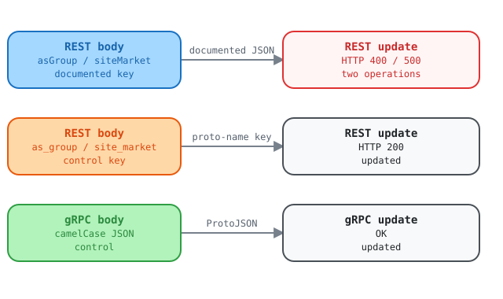

REST update ignores the documented camelCase body when the URL sets a nested field
Report for the Kentik API team. Observed on 2026-10-21 against the live V6
API on a lab account. We used plain curl and grpcurl, and then the Kentik
community Python SDK. Schema: api-schema-public commit 9de9a68, which
matches upstream HEAD 8ec5847 for these services.
WarningThis report contains lab resource IDs and API request IDs. Keep this branch local. Do not merge it into
mainor share it beyond the API team without removing those details.
Summary
Two REST update operations reject the request body that the published
OpenAPI document describes: ASGroupService.UpdateASGroup and
SiteService.UpdateSiteMarket. The body wraps the object in its camelCase
JSON name (asGroup, siteMarket). The server reads the object only under
its proto name (as_group, site_market). That is the name the URL template
uses for the ID. The same request works over gRPC. A client that follows the
OpenAPI document cannot update an AS group or a site market over REST.
The defect does not depend on the SDK. Plain curl gives the same results.
| Operation | REST, documented body | REST, proto-name key | gRPC |
|---|---|---|---|
PUT /as_group/v202212/as_group/{asGroup.id} |
400 request.as_group.name ... received: undefined |
200, updated | OK, updated |
PUT /site/v202509/site_markets/{siteMarket.id} |
500 internal error (name:TypeError) |
200, updated | OK, updated |

Open the interactive request-path explorer to compare the documented REST body with the proto-name and gRPC controls.
Follow-up validation, 2026-10-27
Direct REST tests reproduced both failures above. They returned the documented
missing-field error for AS groups and the TypeError response for site markets.
The documented camelCase body succeeded for FlowTagService.UpdateFlowTag on an
existing disposable tag. The test deleted that tag after the update. The separate
CreateFlowTag operation still returned HTTP 500. That create failure is a
separate API issue.
Current finding status and next actions live only in kentik-api-team-findings.md. This report holds the detailed body-merge evidence.
What the contract says
The proto declares the rule with the proto field name in the path and
body: "*":
// proto/kentik/as_group/v202212/as_group.proto, line 271
rpc UpdateASGroup(UpdateASGroupRequest) returns (UpdateASGroupResponse) {
option (google.api.http) = {
put: "/as_group/v202212/as_group/{as_group.id}"
body: "*"
};
}
The generated OpenAPI document
(gen/openapiv2/kentik/as_group/v202212/as_group.swagger.json) publishes the
path parameter as asGroup.id. It publishes the body as
ASGroupServiceUpdateASGroupBody, whose only property is asGroup:
"parameters": [
{ "name": "asGroup.id", "in": "path", "required": true, "type": "string" },
{ "name": "body", "in": "body", "required": true,
"schema": { "$ref": "#/definitions/ASGroupServiceUpdateASGroupBody" } }
],
"ASGroupServiceUpdateASGroupBody": {
"type": "object",
"properties": { "asGroup": { "type": "object", "properties": { "name": {}, "asn": {} } } }
}
UpdateSiteMarket has the same layout: {site_market.id}, body: "*", and
the body property siteMarket.
Why we think the defect is in the API
- The client sends the body that the published OpenAPI document defines.
- The proto3 JSON mapping requires every parser to accept both the
lowerCamelCase JSON name and the proto field name
(ProtoJSON format).
asGroupandas_groupare two spellings of one field. - The 400 message names
request.as_group.name. The server builtrequest.as_groupfrom the URL ({as_group.id}), and the body never reached that object. - A request with both spellings succeeds, and the server keeps
as_groupand dropsasGroupwithout an error (steps A4 and B4). - The same service accepts camelCase on create, where the URL sets no field.
- The same update over gRPC succeeds with the same data.
- Routes where both spellings are the same word (
label,site) work. The AutoAck request returned HTTP 500SyntaxError, so it does not confirm whether that route has the body-merge defect. The confirmed failures are the AS group and site market routes. The wider cause remains unproven.
A likely cause: the REST layer turns {as_group.id} into
{"as_group": {"id": "..."}}, merges that object with the JSON body as plain
objects keyed by spelling, and then reads as_group. The fix is to normalize
the body to one spelling, or to decode it with a ProtoJSON parser, before the
layer sets the path value.
Scope across the schema
We read the google.api.http rules of all services. 101 rules carry a body.
4 have this layout: body: "*", and a path variable inside a top-level field
whose proto name differs from its JSON name.
| Rule | Path | Live result |
|---|---|---|
ASGroupService.UpdateASGroup |
PUT /as_group/v202212/as_group/{as_group.id} |
Affected |
SiteService.UpdateSiteMarket |
PUT /site/v202509/site_markets/{site_market.id} |
Affected |
AlertAutoAckService.Replace |
PATCH /v202505/alerts/ack/auto/{auto_ack.id} |
No body-merge failure seen: both spellings reached the same validation; real-record PATCH returned separate SyntaxError |
FlowTagService.UpdateFlowTag |
PUT /flow_tag/v202404alpha1/tag/{flow_tag.id} |
No body-merge failure seen: documented body returned 200 on 2026-10-27 |
The other 97 rules cannot hit this defect:
| Group | Rules | Why |
|---|---|---|
| No path variable | 55, including 31 of the 34 creates | The URL sets no field. |
Flat path variable, body: "*" |
15 | The URL sets a top-level scalar. |
| Body is one field | 11 | The body is the object, with no wrapper key. |
| Same name in both spellings | 14 | For example label, site, device, user. |
| Only a nested leaf is renamed | 2 | mkp tenant users, {user.tenant_id}. Not checked live. |
Ask
Make the as_group and site REST layers accept the body that the OpenAPI
document publishes. A body key in either spelling must reach the same field.
A value from the URL must be merged into that field, not replace it. The
FlowTag update returned HTTP 200. Investigate its separate create failure.
Investigate the AutoAck SyntaxError as a separate issue. Confirm the V5 batch
success status with the API team.
Reproduce without the SDK
You need curl 8.3 or later, jq, grpcurl, and an api-schema-public
checkout next to the current directory. The responses below are real
responses from 2026-10-21 at 22:02 UTC. Your IDs and timestamps will differ.
Step 0: set up the session
The helpers read the credentials from the environment, so the token never appears on a command line.
export KENTIK_EMAIL='you@example.com'
export KENTIK_API_TOKEN='...'
BASE=https://grpc.api.kentik.com
AUTH=(--variable %KENTIK_EMAIL --variable %KENTIK_API_TOKEN
--expand-header 'X-CH-Auth-Email: {{KENTIK_EMAIL}}'
--expand-header 'X-CH-Auth-API-Token: {{KENTIK_API_TOKEN}}'
-H 'Content-Type: application/json' -sS -w '\nHTTP %{http_code}\n')
GRPC=(grpcurl -expand-headers
-H 'X-CH-Auth-Email: ${KENTIK_EMAIL}' -H 'X-CH-Auth-API-Token: ${KENTIK_API_TOKEN}'
-import-path ../api-schema-public/proto
-import-path ../api-schema-public/protovendor/github.com/googleapis/googleapis
-import-path ../api-schema-public/protovendor/github.com/grpc-ecosystem/grpc-gateway)
AS group
Step A1: create a test AS group with the camelCase key. This works.
curl -X POST "$BASE/as_group/v202212/as_group" "${AUTH[@]}" \
-d '{"asGroup":{"name":"sdk-e2e-test-curl-e8d1082c","asn":["36459"]}}'
{"asGroup":{"id":"9719305276","name":"sdk-e2e-test-curl-e8d1082c","asn":[{"asn":36459,"name":"Microsoft (GitHub),US"}],"createdDate":"2026-10-21T22:02:49.157Z","updatedDate":"2026-10-21T22:02:49.157Z"}}
HTTP 200
Step A2: update it with the documented body. This fails.
curl -X PUT "$BASE/as_group/v202212/as_group/9719305276" "${AUTH[@]}" \
-d '{"asGroup":{"name":"sdk-e2e-test-curl-e8d1082c-camel","asn":["36459"]}}'
{"code":3,"message":"At path: request.as_group.name -- Expected a string, but received: undefined (errxid dbckd2czked00d9jjnq0)","details":[]}
HTTP 400
Step A3: send the same update with the proto-name key. This works.
curl -X PUT "$BASE/as_group/v202212/as_group/9719305276" "${AUTH[@]}" \
-d '{"as_group":{"name":"sdk-e2e-test-curl-e8d1082c-snake","asn":["36459"]}}'
{"asGroup":{"id":"9719305276","name":"sdk-e2e-test-curl-e8d1082c-snake",...}}
HTTP 200
Step A4: send both spellings with different names. The server keeps
as_group (-b) and drops asGroup (-a) without an error.
curl -X PUT "$BASE/as_group/v202212/as_group/9719305276" "${AUTH[@]}" \
-d '{"asGroup":{"name":"sdk-e2e-test-curl-e8d1082c-a","asn":["36459"]},
"as_group":{"name":"sdk-e2e-test-curl-e8d1082c-b","asn":["36459"]}}'
curl -X GET "$BASE/as_group/v202212/as_group/9719305276" "${AUTH[@]}"
{"asGroup":{"id":"9719305276","name":"sdk-e2e-test-curl-e8d1082c-b",...}}
HTTP 200
{"asGroup":{"id":"9719305276","name":"sdk-e2e-test-curl-e8d1082c-b",...}}
HTTP 200
Step A5: send the camelCase update over gRPC. grpcurl reads the JSON with
a ProtoJSON parser. This works, and a REST GET shows the change.
"${GRPC[@]}" -proto kentik/as_group/v202212/as_group.proto \
-d '{"asGroup":{"id":"9719305276","name":"sdk-e2e-test-curl-e8d1082c-grpc","asn":["36459","46489"]}}' \
grpc.api.kentik.com:443 kentik.as_group.v202212.ASGroupService/UpdateASGroup
{"asGroup":{"id":"9719305276","name":"sdk-e2e-test-curl-e8d1082c-grpc","asn":[{"asn":36459,...},{"asn":46489,"name":"Twitch.tv (Amazon),US"}],...}}
Site market
Step B1: create a test site market with the camelCase key. This works.
curl -X POST "$BASE/site/v202509/site_markets" "${AUTH[@]}" \
-d '{"siteMarket":{"name":"sdk-e2e-test-curl-e8d1082c"}}'
{"siteMarket":{"id":"1994","name":"sdk-e2e-test-curl-e8d1082c","description":"","numberOfSites":0,...}}
HTTP 200
Step B2: update it with the documented body. This fails.
curl -X PUT "$BASE/site/v202509/site_markets/1994" "${AUTH[@]}" \
-d '{"siteMarket":{"name":"sdk-e2e-test-curl-e8d1082c","description":"camel"}}'
{"code":13,"message":"internal error (name:TypeError type:object) (errxid dbckd2wsmfx00gt3td1g)","details":[]}
HTTP 500
Step B3: send the same update with site_market. This works.
curl -X PUT "$BASE/site/v202509/site_markets/1994" "${AUTH[@]}" \
-d '{"site_market":{"name":"sdk-e2e-test-curl-e8d1082c","description":"snake"}}'
{"siteMarket":{"id":"1994","name":"sdk-e2e-test-curl-e8d1082c","description":"snake",...}}
HTTP 200
Step B4: send both spellings. The server keeps snake.
curl -X PUT "$BASE/site/v202509/site_markets/1994" "${AUTH[@]}" \
-d '{"siteMarket":{"name":"sdk-e2e-test-curl-e8d1082c","description":"camel"},
"site_market":{"name":"sdk-e2e-test-curl-e8d1082c","description":"snake"}}'
{"siteMarket":{"id":"1994",...,"description":"snake",...}}
HTTP 200
Step B5: send the camelCase update over gRPC. This works.
"${GRPC[@]}" -proto kentik/site/v202509/site.proto \
-d '{"siteMarket":{"id":"1994","name":"sdk-e2e-test-curl-e8d1082c","description":"grpc"}}' \
grpc.api.kentik.com:443 kentik.site.v202509.SiteService/UpdateSiteMarket
{"siteMarket":{"id":"1994","name":"sdk-e2e-test-curl-e8d1082c","description":"grpc",...}}
Control: label
The label body key is label in both spellings, and the update path sets
{label.id}. The documented body works.
curl -X POST "$BASE/label/v202210/labels" "${AUTH[@]}" \
-d '{"label":{"name":"sdk-e2e-test-curl-e8d1082c","color":"#5289D9"}}'
curl -X POST "$BASE/label/v202210/labels/42057" "${AUTH[@]}" \
-d '{"label":{"name":"sdk-e2e-test-curl-e8d1082c-updated","color":"#E35B5B"}}'
{"label":{"id":"42057","name":"sdk-e2e-test-curl-e8d1082c",...}}
HTTP 200
{"label":{"id":"42057","name":"sdk-e2e-test-curl-e8d1082c-updated","color":"#E35B5B",...}}
HTTP 200
Clean up
curl -X DELETE "$BASE/as_group/v202212/as_group/9719305276" "${AUTH[@]}"
curl -X DELETE "$BASE/site/v202509/site_markets/1994" "${AUTH[@]}"
curl -X DELETE "$BASE/label/v202210/labels/42057" "${AUTH[@]}"
Request IDs
| Run | Call | Status | errxid |
|---|---|---|---|
| curl | UpdateASGroup | 400 | dbckd2czked00d9jjnq0 |
| curl | UpdateSiteMarket | 500 | dbckd2wsmfx00gt3td1g |
| SDK | UpdateASGroup | 400 | dbck70czked004gescz0 |
| SDK | UpdateSiteMarket | 500 | dbck71msmfx0081rvfx0 |
| SDK | AutoAck Replace control | 400 | dbck78dzked00d9jjmr0 |
| REST | AutoAck Replace documented body | 500 | dbgge7gzked0089cpq20 |
| REST | CreateFlowTag | 500 | dbgesketkfgg04rgdw1g |